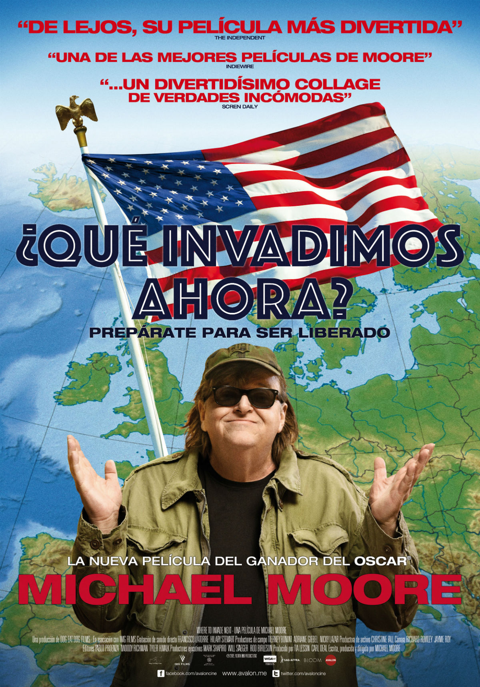

En el documental de Michael Moore titulado ¿Qué invadimos ahora?, el controvertido director simula «invadir» varios países europeos llevándose de ellos, en lugar de petróleo u otros bienes, conocimientos que podrían servir a la sociedad americana en distintos aspectos. De Eslovenia se «lleva» un sistema universitario gratuito, de Alemania la ley que prohíbe contactar con los trabajadores durante sus vacaciones, de Portugal un sistema sanitario universal…

Es un documental ambicioso que habla de temas complejos que incumben a las administraciones y las empresas, pero tiene también una lectura útil que puede servir a cualquier persona para su vida privada. Porque el documental puede gustarte o no, pero una cosa hay que reconocerle a Moore: conoce técnicas para exponer sus argumentos de una forma bastante convincente.
Estas son algunas sugerencias extraídas del documental de Moore que pueden ser útiles en una discusión (laboral o personal), una conversación en la que se desea hacer valer unos argumentos o un proceso de toma de decisiones.
Esto es algo muy útil para esos puristas que leen los artículos buscando esos aspectos en los que pinchan o son inexactos. Moore se prepara desde el principio para responder a todos aquellos que critican sus documentales porque «buscan los casos más extremos» o porque «aunque es verdad, no todo es como aparece en el documental».
En cada uno de los ejemplos que comenta, especifica que sabe que no todo es de color de rosa, pero que «él ha ido a Europa a buscar flores y no a quitar las hierbas».
Si, por ejemplo, él pone un ejemplo de un colegio francés en el que toda la comida parece hecha por chef y se sirve en platos de porcelana, podemos tener dos reacciones. La primera, «saltar» y decir «¡no será así en todos los colegios!». La segunda, la que él busca, pensar: «aunque no sea así en todos los colegios, es cierto que quizá podríamos mejorar un poco ese aspecto en los nuestros».
Busquemos qué nos quieren decir realmente nuestros interlocutores en lugar de escarbar para encontrar algún fallo en su argumento, y nos acercaremos más a la comprensión mutua.
Durante todo el documental, Moore hace comentarios que hacen al espectador prever una conclusión final un poco «patriota»: el cineasta explica en el epílogo que todas esas buenas ideas que ha visto en Europa nacieron en realidad en Estados Unidos, aunque Europa las esté aplicando en la actualidad.
Un giro un poco forzado, ya que se trata de unos asuntos tan amplios que podrían tener precedentes casi en cualquier lugar si se buscan adecuadamente.
Pero se entiende el motivo de esta conclusión final: quizá algunos americanos necesiten creer que se les ocurrió a ellos primero, que no son otros los que han tenido la mejor idea.
No deberíamos tener miedo a mejorar aunque hayan sido otros los que nos lo hayan sugerido.
Los europeos dicen «pobrecitos en Estados Unidos, que no tienen Seguridad Social y tienen que pagar cada visita al médico». En Estados Unidos dicen «pobrecitos los europeos, que pagan muchísimos impuestos». En su documental, Moore hace una comparativa y explica que el incremento de impuestos es en realidad mucho menor a la suma de lo que paga un americano medio por todos los servicios que aquí están financiados públicamente.
Más allá del ejemplo concreto, tenemos que ser conscientes de que en cualquier discusión casi cualquier cosa se puede plantear de forma que parezca una ventaja o algo negativo.
Lo vemos frecuentemente cuando, tras una jornada electoral, los periódicos juegan con sus titulares para que parezca vencedor un partido u otro.
Intentemos acercarnos lo máximo posible a la objetividad cuando expongamos nuestros motivos, porque si somos «pillados en un renuncio» o si maquillamos algo demasiado, el resto de nuestra exposición perderá fuerza.
En una reunión, discusión o exposición de argumentos, debes tener preparada la «artillería» verbal para todo lo que preveas que puede volverse en tu contra. Moore lo hace de forma muy acertada en su documental.
Así, si está hablando de una cárcel finlandesa en la que las condiciones para los reclusos son muy cómodas, prevé que mucha gente dirá «seguro que no todas las cárceles son así» y decide mostrar una cárcel de máxima seguridad en ese país para que vean que, sin llegar al extremo de la que había mostrado al principio, las condiciones son también bastante buenas.
Moore trabaja estupendamente el «sé lo que vas a decir», y practicar eso en una exposición de argumentos ayuda mucho a dominar en todo momento el discurso y no verse sorprendido.
Al ver los ejemplos de situaciones sociales idílicas, por ejemplo en los países nórdicos, uno puede sentir un trasfondo de «pereza». ¿Cuántas leyes y cambios harían falta para conseguir algo así?
Sin embargo, Moore, de nuevo previendo una reacción escéptica, plantea el ejemplo de Islandia, cuyo sistema económico colapsó en 2008 y que ha sabido recomponerse en un lapso de tiempo increíblemente breve gracias a acciones tajantes como la de procesar penalmente a más de 70 banqueros.
Lo que soñamos puede estar más cerca si eliminamos la pereza o la tentación de dejar de luchar solo porque los cambios no se vayan a hacer evidentes inmediatamente.
Cuando valoramos una situación, tendemos a sopesar los beneficios que nos aportará. Los beneficios que aportará a los otros también los valoramos, claro, pero solo por nuestro deseo de ser generosos, o de verles felices si se trata de personas que nos importan. A veces olvidamos que beneficiar a los otros también tendrá un beneficio indirecto para nosotros, y no solo en la conciencia.
Los empresarios italianos que entrevistaba Moore en la cinta aseguraban que no daban ventajas de conciliación y vacaciones a sus empleados por ser generosos, sino porque de esta manera ellos conseguían un retorno: la gente se implicaba más y trabajaba mejor. «El beneficio de la empresa no está reñido con el bienestar de la gente», aseguraban.
Es algo así como esa metáfora en la que se proponía a una serie de personas comer con unos tenedores larguísimos. No conseguían llevarse nada a la boca hasta que se les ocurrió que si cada uno daba de comer al que tenía enfrente, todos comerían. Aunque es estupendo ayudar de forma altruista, es válido si tienes en cuenta también que cada vez que haces algo por alguien, te llegará un retorno de algún tipo.
Cuando recala en Alemania, además de algunos asuntos relacionados con el sector industrial, Michael Moore se fija en que en los colegios alemanes se habla abiertamente del holocausto y se realizan actos conmemorativos respetuosos. En contraposición, dice, América intenta «barrer bajo la alfombra» los errores de su pasado. Reconocerlos y aceptarlos es una posición mucho más honesta para afrontar un presente libre de dichos errores.
Es un tópico eso de que algunas personas pierden interés en otras cuando consiguen que les hagan caso. También hemos oído muchas veces que no valoramos adecuadamente derechos actuales por los que nuestros antepasados tuvieron que luchar mucho.
Pero algo de verdad hay en esas afirmaciones. En la primera parada de su viaje, Moore aterriza en Italia, donde se queda perplejo al conocer las vacaciones pagadas, las pagas extra o los días libres tras un enlace matrimonial, ventajas de las que también disfrutamos en España.
No dejemos nunca de ser inconformistas pero, a la vez, sepamos valorar lo que tenemos y no caigamos en el error de ser un saco de peticiones sin fondo que siempre quiere más. Seamos conscientes de que siempre habrá alguien que esté peor. Como decía Calderón de la Barca en La vida es sueño:
Cuentan de un sabio que un día
tan pobre y mísero estaba,
que sólo se sustentaba
de unas hierbas que cogía.
—¿Habrá otro —entre sí decía—
más pobre y triste que yo?
Y cuando el rostro volvió
halló la respuesta, viendo
que otro sabio iba cogiendo
las hierbas que él arrojó.
Michael Moore se fija especialmente en ejemplos como los del sistema educativo de Finlandia, donde todos los colegios tienen exactamente la misma calidad, bajo el argumento de que, de esta manera, las familias más favorecidas se preocuparán de mejorarlos y los hijos de estas familias tendrán amigos de otras clases sociales y «se lo pensarán dos veces» a la hora de fastidiarlos en el futuro.
Moore se lamenta de que los niños estadounidenses no gocen de esta igualdad a pesar de encontrarse en el tantas veces llamado «país de las oportunidades». Menos etiquetas, palabrería y propósitos vacíos y ¡más acción!